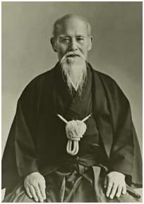
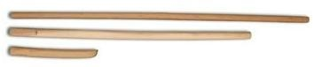
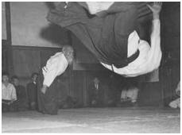

What is Aikido?
"I call on to those who will take and follow the path of Aikido. Aikido is not about guiding others along the right path, it's about guiding yourself." -Morihei Ueshiba (founder of Aikido)
 Aikido was founded by Morihei Ueshiba (1883-1969) who continued to develop it from the 1920’s until the end of his life. Since it emerged in the previous century, it may be seen as a modern interpretation of Budo. Bu-do (Bu means war or warrior and Do is path or way.) is used for martial arts in Japanese and means the way to war or the way of the warrior. Since Budo is seen as a way for warriors, the names of many martial arts that originated in Japan and spread all throughout the world include the “do” suffix. Aikido can be translated into English as harmony(ai), energy(ki) and way(do).
Aikido already spread to many other countries while Ueshiba (who is referred to by practitioners of Aikido as O’Sensei – the Great Teacher) was still in life. It first arrived to France in 1951, then was taken to the U.S. in 1953, to Britian and Ireland in 1955 and to Germany and Australia in 1965. Later its spread to all over the world gained momentum and soon after Aikido lessons were given in many parts of the world. In Turkey, its official introduction was in 1982.
Budo is based on the skills and techniques that were used by the Samurai and other Japanese warriors. Aikido has techniques in which a sword(bokken), a wooden stave (jo) or a wooden knife(tanto) may be used as well as techniques that do not require the use of any weapons.
In Aikido, uke (the attacker) and nage (the defender) are not supposed to engage in a war of brute force, testing the strength of each other with needless force. On the contrary, as the name of Aikido suggests, nage is supposed to harmonize with uke’s move, receive uke’s energy and redirect this energy back to him/her using body motions without initiating any direct offense. The critical feature is to control the balance of the attacker. The way to achieve this is to push his center off balance. (Center of a body is the strongest point and the point of balance.) This can only be done by constant motion, not by a static body.
 In practicing Aikido, uke and nage share equal importance. In order to progress in Budo, one must be able to perform the techniques very well as both an uke and a nage.
The first lesson for beginners in Aikido is on how to react and how to fall on the mat in a safe and secure way once a technique is done upon to them. However, it is not expected that a beginner can be an appropriate uke to an advanced nage. Therefore, during practice, the techniques must be carried out at the level of the uke and this, in turn, depends on the ability of the nage to carry out the technique at this level. (The nage has to maintain his/her speed and power at a level that the uke can handle.) It is in fact not very accurate to percieve Aikido as an only defensive martial art. When a Nage performs the techniques at its real pace, serious injuries or even death may occur. Yet, Aikido is also based on a philosophy that aims not to inflict injury on the attacker. It is this philosophy, willing and choosing not to hurt even when you can hurt, that makes Aikido a way of love as well.
O’Sensei opposed organizing tournaments among students in practices because some of the techniques were quite dangerous and he thought that the contests in these tournaments could be detrimental to the character development of his students as the philosophy of Aikido includes not harming the attacker.
Because there are no competitions in Aikido, it is not possible to talk about some of the techniques in other Budo martial arts. After learning the fundamental moves, a student tries to smooth these techniques by constant observation and practice. Aside from the technical rules, there are a set of rules, named as “etiquette”, that all Budo martial arts observe. The way of the warrior is set according to these rules. These may essentially be grouped under the heading of discipline. The survival of a group requires that a set of rules be established. It is this requirement that brings etiquette and discipline into Budo. Etiquette and discipline guarantee the continuation of the rules. Etiquette controls our identity and assures that we behave according to moral norms rather than instincts.
We have already mentioned that etiquette includes a number of other things in addition to the techniques. Even the way we leave our shoes after we take them off outside the Dojo could be an example to this. Our aesthetic conscience tells us that once we take off our shoes, they must be properly left in the right place. (This could be seen outside the doors of many Aikido dojos.)
The goal of Aikido is to teach harmony, love and peace. Aikido expresses the way the universe works using the human body. Once harmony with the movement of the universe is applied on the body in the right way, the body rejuvenates itself in form and health. This rejuvenation would reflect itself in daily life in one’s education, work, and personality. As a result, harmony with the universe would bring universal peace.
Advice from Morihei Ueshiba on Practicing Aikido
- Aikido can determine life or death with a single blow; therefore, when training, observe the directions of the instructor and do not engage in contests of strength.
- Aikido is a Way that makes one person the equivalent of thousands; therefore, when training, always be mindful not only of the space in front of you, but also what is happening in all directions.
- Training should always be an enjoyable experience.
- An instructor can only impart a portion of the teachings. To be able to use a technique, you must learn it through diligent and ceaseless training. Only then will you begin to remember with your body. It is pointless to desire to learn many techniques. To master a technique, you must make it your own.
- Daily training begins with Tai no Henko. Gradually increase the intensity of your training. Make sure not to overexert your body. Even older persons should not injure themselves. Continue to train enjoyably and strive to realize the purpose of training.
- Aikido is training of the mind and body. Its purpose is to produce sincere people. Since all techniques are entirely secret, you should not reveal them indiscriminately to the public. The improper use of any technique by ill-mannered persons is to be avoided.